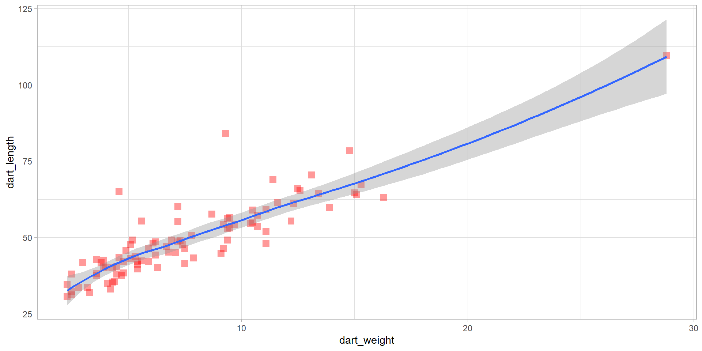

Introduction to R
Part 2
Overview
Overview of the workshop
4.) Data manipulation
- dartpoints data
- package
dplyr/tidyverse
5.) Data visualisation
- package
ggplot2
Exercise
Task:
- create a new project and save it to a new, parent folder. Call it for example as “atRium2024”
- create subfolders for data, figures, script and results
- move the data “dartpoints.csv” to your data folder
- open a new script and save it as “data_manipulation.R” to your script folders
- load the packages
here
Data manipulation
dplyr package
We will learn how to:
- use pipe
%>%to work with functions more efectively - select desired variables -
select() - rename your variables -
rename() - order them from lowest to highest values (or vice versa) -
arrange() - filter your data based on different conditions -
filter() - calculate different summary statistics such as mean or count -
summarise() - add new variables such as percentage -
mutate() - save your results as comma separated file
But first, install and load package dplyr and here and load dartpoints.csv data
Select
Name Catalog TARL Quad Length Width Thickness B.Width J.Width H.Length
1 Darl 41-0322 41CV0536 26/59 42.8 15.8 5.8 11.3 10.6 11.6
2 Darl 35-2946 41CV0235 21/63 40.5 17.4 5.8 NA 13.7 12.9
Weight Blade.Sh Base.Sh Should.Sh Should.Or Haft.Sh Haft.Or
1 3.6 S I S T S E
2 4.5 S I S T S E- too many variables? Select only the ones you want to work with
select(dataframe, variable1, variable2)
Pipe
%>%hotkey on my computer “CTRL + SHIFT + M”- note that when using the pipe, you don’t need to add name of the object (in this case “df_darts”) into the parametres of the function
- note that I have created new object “df_darts_edit”. From now on I will manipulate data only in this object and leave “df_darts” unchanged for back-up
Renaming
- renaming your variables with function
rename(data, new_name = old_name)can be useful when dealing with complicated code names or different languages
Arranging
- here you can order your observations from the lowest to highest (or vice versa). To do so, use function
arrange(data, variable)
dart_type dart_ID dart_length dart_width dart_weight
1 Darl 36-3321 30.6 17.1 2.3
2 Darl 35-2382 31.2 15.6 2.5
3 Darl 36-3619 32.0 16.0 3.3
4 Darl 36-3520 32.4 14.5 2.5- arranging data in oposite way by nesting function
desc()into thearrange():
Filtering
function
filter(data, variable <operator> value)allows you to filter your data based on different conditions, for example minimal weight, type of the dartpoint, etclogical and mathematical operators: ==, !=, <, >, >=, <=, &, |, etc (use
?dplyr::filterfor more details)here we use
>to get only dartpoints longer than 80 mm
- and here we use == to choose only those dartpoints which are of type “Travis”
df_darts_travis <- df_darts_edit %>%
filter(dart_type == "Travis")
unique(df_darts_travis$dart_type)[1] "Travis"- alternatively, you can exclude all points of a type “Travis” by negation !=
Filtering with multiple conditions
- you can use
|or&for filtering with more than one condition - for example here we will filter all points which are type “Wells” (AND) are heavier than 10 grams
df_darts_wells_10 <- df_darts_edit %>%
filter(dart_type == "Wells" & dart_weight > 10)
head(df_darts_wells_10) dart_type dart_ID dart_length dart_width dart_weight
1 Wells 36-3088 65.4 25.1 12.6
2 Wells 44-0732 63.1 24.7 16.3
3 Wells 35-3079 58.9 24.4 10.5Task: instead of & try operator | (OR) and see how the result differs
Filtering based on vector
- you can make your code less complicated when you create vector from desired values and then filter all observations which fall into that vector by using operator
%in%
Summarise
- we already know some functions to calculate basic summaries, for example function mean
- but if you want to create a new dataframe from calculated statistics, function
summarise(data, new_variable = summary_statistics)is much more helpfull - for summary statistics you can use different functions:
mean(),median(),sd(),min()…, (use?summarisefor more details)
- you can also calculate more summaries:
Grouping data
- summaries above were applied on whole dataframe. Here we will learn how to calculate summaries for each type of the dartpoint by using
group_by(data, variable_to_be_grouped_by)
df_darts_edit %>%
group_by(dart_type) %>%
summarise(
mean_length = mean(dart_length),
type_count = n()
)# A tibble: 5 × 3
dart_type mean_length type_count
<chr> <dbl> <int>
1 Darl 39.8 28
2 Ensor 42.7 10
3 Pedernales 57.9 32
4 Travis 51.4 11
5 Wells 53.1 10- Lets fix the decimals by function
round()
Mutate
- function mutate creates a new variable and adds it to the most recent dataframe
# A tibble: 91 × 6
# Groups: dart_type [5]
dart_type dart_ID dart_length dart_width dart_weight mean_weight
<chr> <chr> <dbl> <dbl> <dbl> <dbl>
1 Pedernales 35-2855 110. 49.3 28.8 10.6
2 Pedernales 36-3879 84 21.2 9.3 10.6
3 Pedernales 35-0173 78.3 28.1 14.8 10.6
4 Pedernales 38-0098 70.4 30.4 13.1 10.6
5 Travis 43-0112 69 20.9 11.4 8.59
6 Pedernales 41-0239 67.2 27.1 15.3 10.6
7 Pedernales 35-2391 66 27.2 12.5 10.6
8 Wells 36-3088 65.4 25.1 12.6 8.68
9 Pedernales 43-0110 65 31.6 4.6 10.6
10 Travis 36-0006 64.6 21.5 15 8.59
# ℹ 81 more rowsDifference between summarise() and mutate()
summarise()creates a new dataframe from calculated values- example bellow show the maximum width of the dartpoints grouped by dart type
# A tibble: 5 × 2
dart_type width_max
<chr> <dbl>
1 Darl 23.3
2 Ensor 27.3
3 Pedernales 49.3
4 Travis 22.4
5 Wells 29.6mutate()adds a new variable to the dataframe
# A tibble: 8 × 6
# Groups: dart_type [3]
dart_type dart_ID dart_length dart_width dart_weight width_max
<chr> <chr> <dbl> <dbl> <dbl> <dbl>
1 Pedernales 35-2855 110. 49.3 28.8 49.3
2 Pedernales 36-3879 84 21.2 9.3 49.3
3 Pedernales 35-0173 78.3 28.1 14.8 49.3
4 Pedernales 38-0098 70.4 30.4 13.1 49.3
5 Travis 43-0112 69 20.9 11.4 22.4
6 Pedernales 41-0239 67.2 27.1 15.3 49.3
7 Pedernales 35-2391 66 27.2 12.5 49.3
8 Wells 36-3088 65.4 25.1 12.6 29.6More complex summarising with dplyr and pipe
df_darts_sum <- df_darts_edit %>%
group_by(dart_type) %>%
summarise(
length_mean = round(mean(dart_length), 1),
weight_mean = round(mean(dart_weight), 1),
type_count = n()) %>%
mutate(type_percent = round(type_count/sum(type_count)*100, 1)) %>%
arrange(desc(type_count))
df_darts_sum# A tibble: 5 × 5
dart_type length_mean weight_mean type_count type_percent
<chr> <dbl> <dbl> <int> <dbl>
1 Pedernales 57.9 10.6 32 35.2
2 Darl 39.8 4.4 28 30.8
3 Travis 51.4 8.6 11 12.1
4 Ensor 42.7 5.1 10 11
5 Wells 53.1 8.7 10 11 write.csv(name_of_your_object, file = "path_to_your_folder")will save your result as a .csv file, which is nice
Data Visualisation
Visualising your data with packgage ggplot2
Inspiration

Starting with ggplot2
Basic syntax
ggplot(data = <your data frame>) +
aes(x = <variable to be mapped to axis x>) +
geom_<geometry>()
Basic types of ggplot - barplot
- for one variable

Basic types of ggplot - histogram
- distribution of one variable
Basic types of ggplot - density plot
- distribution of one variable
Basic types of ggplot - boxplot
Basic types of ggplot - scatter plot
- comparing two or more variables
Refining your plot
Lets go back to the scatterplot and play a little
Task:
- try different colours, shapes and themes
Different shapes with their codes:

Playing with variables
- in this case, the colours and size of the points is conditional on the values of the variables
Adding text
ggplot(data = df_darts_edit)+
aes(x = dart_weight, y = dart_length, color = dart_type, size = dart_weight)+
geom_point(alpha = 0.5)+
labs(
title = "A very nice plot",
subtitle = "Look at those colors!",
x ="weight (g)",
y = "length (g)",
caption = "Data = package Archdata",
color = "Type of a dart",
size = "Weight of a dart")+
theme_classic()Spliting plots
ggplot(data = df_darts_edit)+
aes(x = dart_weight, y = dart_length, color = dart_type, size = dart_weight)+
geom_point(alpha = 0.5)+
facet_wrap(~dart_type)+
labs(
title = "A very nice plot",
subtitle = "Look at those colors!",
x ="weight (g)",
y = "length (g)",
caption = "Data = package Archdata",
color = "Type of a dart",
size = "Weight of a dart")+
theme_light()Saving plot
best_plot <- ggplot(data = df_darts_edit)+
aes(x = dart_weight, y = dart_length, color = dart_type, size = dart_weight)+
geom_point(alpha = 0.5)+
labs(
title = "A very nice plot",
subtitle = "Look at those colors!",
x ="weight (g)",
y = "length (g)",
caption = "Data = package Archdata",
color = "Type of a dart",
size = "Weight of a dart")+
theme_classic()Back to barplots
Back to the density plot

Points instead of boxplots
Exercise
Task:
- Download data set with bronze age cups bacups.csv
- Explore the data set and its structure.
- What are the observations?
- What types of variables are there?
- Create a plot showing distribution of cup heights (H).
- Create a boxplot for cup heights divided by phases (Phase).
- Are there any outliers?
- Create a plot showing relationship between cup height and its rim diameter.
- Color cups from different phases (Phase) by differently.
- Label the axes sensibly.
Hint: you can get the information about the dataset by:
Other hints:
geom_histogram(), geom_boxplot(), geom_point(), labs()
Solution
RD ND SD H NH Phase
1 11.1 10.0 10.3 5.5 2.5 Subapennine
2 9.5 9.2 9.8 4.8 2.0 Subapennine
3 20.8 20.9 22.0 9.5 3.8 Subapennine
4 19.5 18.2 19.5 8.8 2.7 Subapennine
5 15.5 15.5 18.8 9.8 3.2 Subapennine
6 11.7 11.1 11.5 3.8 1.4 Subapennine'data.frame': 60 obs. of 6 variables:
$ RD : num 11.1 9.5 20.8 19.5 15.5 11.7 10.8 15 18.5 11 ...
$ ND : num 10 9.2 20.9 18.2 15.5 11.1 10.7 16.1 16.4 8.9 ...
$ SD : num 10.3 9.8 22 19.5 18.8 11.5 10.8 16.4 18 9.5 ...
$ H : num 5.5 4.8 9.5 8.8 9.8 3.8 3.5 11.8 10.5 5.8 ...
$ NH : num 2.5 2 3.8 2.7 3.2 1.4 1.7 3.5 4.8 3.7 ...
$ Phase: chr "Subapennine" "Subapennine" "Subapennine" "Subapennine" ...